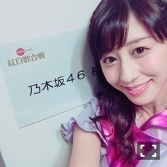
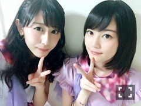
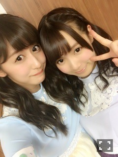

| 2016/01 03 Sun | 斎藤ちはる 明けました！ででん と今年の目標です！ 紅白の余韻。(´>∀< ｀)ゝ |
初！！ちはるーむへようこそ\( ˆoˆ )/
あけましておめでとうございます♡
改めまして斎藤ちはるです♡
今年もどうぞよろしくお願いいたしますm(_ _)m
今年は申年！！
ぷーー
さるです。
去年の大晦日、ありがたい事に
紅白歌合戦に出演させていただきました( ;o; )
本当に本当に嬉しい( ;o; )
一昨年までの大晦日、他の番組を見ず、ずっと紅白一筋だったから、あの舞台にまさか自分が立てるなんて...！！
家族も、おばあちゃんおじいちゃんも、親戚も、友達もみんな見てくれてたみたい。。
ありがたいです。
出演者の皆さんのオーラも、スタッフさんの数も凄かった...！
歴史のある紅白って、紅白にでるって、こういうことなんだなあ。
そして何より、君の名は希望。
この曲を披露できてよかった！
袖で準備してる時とかサビ前まですごく緊張してて顔も途中ピクピクなったりしたんだけど
ふっと緊張が解けて、冷静にその場を楽しむことができました！
すごく幸せな、楽しい時間でした...！
そして何より、あの時間を37人みんなで共有できたことがものすごく嬉しいです。
支えてくれたメンバー、家族、スタッフさん、そしてファンの皆さんに、感謝の気持ちを伝えたいです。
いつもありがとう。

紅白楽屋にて♪
勝ち敗けとかこだわらないタイプだけど
やっぱり紅組優勝して嬉しい...
フィナーレまで参加できてみんなと一緒に喜べたことも嬉しい...！
素敵な経験をありがとうございました！！
また今年もみんなで出られるよう、精一杯頑張ります！！
ででんっ
1年も始まったということで...
「2016年、今年の目標」
大きな目標。
☆色々なことにチャレンジをして、自分をみつける
→将来の自分のために、何が1番自分に合っているのか、何を伸ばすべきなのかを、こうすべき、こうしなければいけないという固定観念にとらわれずに見つけ出す。今までと変わらず演技をする事も好き。写真を撮られるモデルやグラビアのお仕事も好き。アメフトやゴルフなど、スポーツの楽しさを伝えることも好き。たくさんのお仕事をしてたくさんの経験をしたい。
具体的な目標。
・中3組でユニットを組む！
・アメフトの番組に出る！
・連載を持つ！
・レギュラーを増やす！
・グラビアのお仕事をたくさんする！
・専属モデルをする！
・雑誌の表紙を飾る！
・舞台や映画、ドラマなど演技のお仕事をする！
・文章を書くお仕事をする！
・ファッション関係(スタイリングやプロデュースなど)をする！
・斎藤の"斎"を間違われないくらい名前を知ってもらう！
・勉強のために舞台やライブ、映画にたくさん行く！
・5歳のときの輝きをもう一度！テレビCMに出る！
・ブログをたくさん書く！
・握手会もっとたくさんの方に来てもらう！
・ミステリーハンターになる！
・趣味を増やす！
大きな目標かもしれないけれど、言わなきゃ叶いません。
〜がしたい！という願望じゃなくて、
〜にする！と、言い切った方が叶うらしいのです。
失敗を恐れずに前へ進んでいきます！
失敗は成功のもと。
何事も経験！
18歳から19歳の1年間は人として
一回り大人に成長していきます。
今年が終わるまでに何個叶えられてるかな...？
頑張るぞ！
さる〜うっきっき〜
握手会のことはまた次のブログに書くね♪
今年初ブログ...！
皆さんのコメントも初コメント...！
楽しみに待ってるね(﹡ˆ ˆ﹡)


いくちゃん♡ひめたん♡中3組♡
今日初夢見られなかった...覚えてなかった...
ショックーー(> <)
でも多分、一富士二鷹三茄子みたかな♡笑
皆さんは、みた？？
今年はもっと皆さんの笑顔がみられますように。
ちはるーむめいとさんが幸せに過ごせますように。
斎藤ちはる